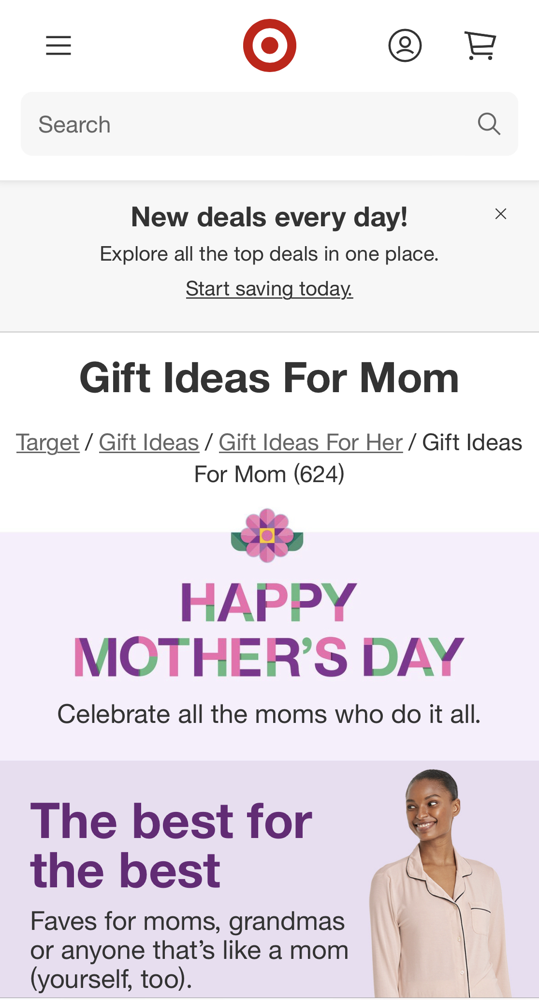
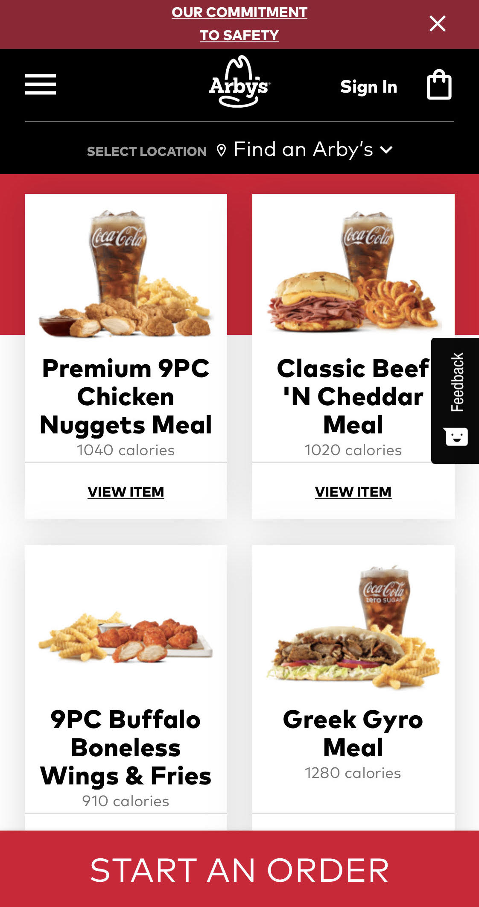

Rule of Thirds
TargetTarget Website
Target's mobile website is a great example of using the rule of thirds. You can see that they divided up each section of the "Gift Ideas For Mom" and placed them within a range of thirds. To make the images and graphics more appealing the developers decided not to put the sections in the middle of the screen but rather within the rule of thirds.
White Space and Clean Design
Arby'sArby's Website
Arby's mobile website is a good example of using white space and a clean design. Each item shown on this page is divided by white space, giving it a clean and simple look. This allows for customers to quickly find items they want which most likely helps Arby's company.
Visual Hierarchy
Old NavyOld Navy's Website:
Old Navy's mobile website is a good example of Visual Hierarchy. The first words that pop out are the ones highlighted in bold. It catches the viewers attention right away and stands out from the all the other text on the page.